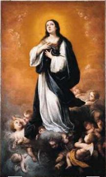
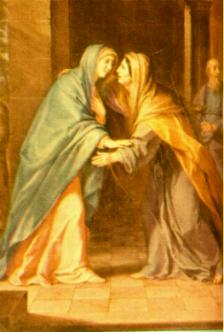

- Un jour, MARIE avait fini SES occupations domestiques
et se reposait dans SA pi�ce. ELLE m�ditait sur les v�rit�s des papyrus sacr�s, sur SA
fian�ailles avec Joseph et sur SA non r�prim� et irr�pressible amour pour DIEU.
Soudainement, un Ange du SEIGNEUR a paru � ELLE. MARIE a senti une grande
�motion... Et avec l'effroi de l'inattendu ELLE est rest�e debout. Beaucoup de
embarrass�, ELLE l'a regard� en silence. L'Ange a souri et l'a salu�e:
- Un jour, MARIE avait fini SES occupations domestiques
et se reposait dans SA pi�ce. ELLE m�ditait sur les v�rit�s des papyrus sacr�s, sur SA
fian�ailles avec Joseph et sur SA non r�prim� et irr�pressible amour pour DIEU.
Soudainement, un Ange du SEIGNEUR a paru � ELLE. MARIE a senti une grande
�motion... Et avec l'effroi de l'inattendu ELLE est rest�e debout. Beaucoup de
embarrass�, ELLE l'a regard� en silence. L'Ange a souri et l'a salu�e:
"Et dit: Je te salue, toi � qui une gr�ce a �t� faite; le Seigneur est avec toi"! (Luc 1,28)
En �coutant la salutation, ELLE a �t� admir�e et a pens�: "Mais qu'est-ce que c'est �a, mon DIEU"? Et en r�pondant � la salutation, ELLE a inclin� l�g�rement la t�te et est rest�e dans silence en regardant par Lui. En manifestant la joie, l'Ange a essay� de la tranquilliser et a dit qu'Il �tait l'Archange Gabriel et qu'il ex�cutait les ordres du ciel:
"Ne crains point, Marie; car tu as trouv� gr�ce devant Dieu." (Luc 1,30)
Et Il a r�v�l� que le SAINT P�RE avait r�pandu SES gr�ces sur ELLE et qui ELLE �tait quelqu�un tr�s sp�ciale dans le Paradis Divin, et Il a continu�:
"Et voici, tu deviendras enceinte, et tu enfanteras un fils, et tu lui donneras le nom de J�SUS. Il sera grand et sera appel� Fils du Tr�s-Haut, et le SEIGNEUR DIEU lui donnera le tr�ne de David, son p�re. IL r�gnera sur la maison de Jacob �ternellement, et SON r�gne n'aura point de fin". (Luc 1,31-33)
MARIE a senti un immense et indicible plaisir. DIEU correspondait au SA amour, au SA profond et br�lant amour qu�ELLE avait consacr� � LUI avec tout l'�lan de SA �me et avec la plus grande intensit� de SA vie. Pour cette raison, ELLE �tait visiblement embarrass�e d'�motion... Mais, ELLE pensait sur le vote de la chastet� perp�tuelle qu'ELLE avait fait et a demand� � l'ange:
"Comment cela se fera-t-il, puisque je ne connais point d'homme?" (Luc 1,34)
L�Ange LUI a r�pondu:
"Le SAINT-ESPRIT viendra sur toi, et la puissance du Tr�s-Haut te couvrira de son ombre. C'est pourquoi le saint enfant qui na�tra de toi sera appel� FILS DE DIEU." (Luc 1,35)
Avec beaucoup d�attention et prise du plaisir par la sublimit� et la grandeur de l'amour Divin, MARIE de Nazareth a continu� silencieusement en �coutant les mots de l'Archange:

Apr�s l'avoir ou�e ces mots, les jolis yeux de MARIE ont brill� intens�ment et plein de bonheur. ELLE tr�s aimait SA cousine et savait, le combien elle voulait avoir un fils. Et l'Archange Gabriel a expliqu� et argument� � avec MARIE, en disant que SA vote de chastet� sera prot�g� parce que adviendra une conception miraculeuse et pour compl�ter, Il a affirm�:
"Car rien n'est impossible � DIEU". (Luc 1,37)
Il a eu un silence absolu... La nature a arr�t�, les oiseaux n'ont plus chant� pas, l'expectative �tait g�n�rale... Pour MARIE, cependant, avec toute SA simplicit� et modestie, c'�tait une pause n�cessaire pour �tre capable de respirer, aussi bien pour r�cup�rer l�haleine de SES sens tant excit�e par la Magnanime et Infinie Bont� du CR�ATEUR. Et alors, ELLE a dit le "OUI" si l�esp�r�, auquel "OUI" que nous a apport� le SEIGNEUR J�SUS, le Sauveur et le R�dempteur d'humanit�. Le "OUI" que nous a l�gu� la Mis�ricorde Divine et il nous a proportionn� la Vie �ternelle, parce qu'il a neutralis� l'intensit� du �oui� d'Eva, cette �oui� que a �t� dit par la premi�re femme � l'Ange de l'Obscurit�, d'o� il est provenu le P�ch� et la Mort. Alors MARIE a dit:
"Je suis la servante du SEIGNEUR; qu'il me soit fait selon ta parole! Et l'ange la quitta". (Luc 1,38)
Dans cet instant l�, DIEU a compl�t� le �D�cret de L�Annonciation�. L'Archange Gabriel a dit au revoir et MARIE n'�tait pas plus seule parce qu'il a commenc� la sacr�e grossesse de NOTRE DAME.

DANS LES MONTAGNES DE HEBRON
 - D�j� refaite de l'extraordinaire surprise et en gardant dans SA c�ur
les inoubliables �motions, MARIE s'est
- D�j� refaite de l'extraordinaire surprise et en gardant dans SA c�ur
les inoubliables �motions, MARIE s'est
ELLE a parl� avec ses parents et avec Joseph sur la grossesse de SA cousine et de l'importance de la visiter et de l'aider jusqu'� la r�cup�ration totale. Ils ont consenti et Joachin que toujours voyageait � J�rusalem pour accomplir des transactions commerciales, a promis d'amener sa fille aussit�t que possible, dans le prochain voyage:
"MARIE se leva, et s'en alla en h�te vers les montagnes, dans une ville de Juda". (Luc 1,39)
Naturellement, son p�re �tait aupr�s d�ELLE dans une caravane des n�gociants que p�riodiquement passait au c�t� de Nazar�. C�est providence �tait n�cessaire, pour �tre prot�g�e contre beaucoup de voleurs qui infestaient cette r�gion.
Ils ont voyag� 140 kilom�tres de route tortueuse et pleine de pierres jusqu'� J�rusalem. L�, Joachin est rest� pour travailler et MARIE est all�e � pied 6 kilom�tres qui s�parait J�rusalem d'Ain Karin o� SA cousine vivait.
La rencontre des deux femmes a �t� solennelle et remplie de joie, une visite diff�rente des tants autres, � cause du myst�re de la maternit� des deux cousines. La satisfaction de MARIE en servir Elizabeth d�bordait dans un apparent bonheur, et dans un moment important de SA vie:
"ELLE entra dans la maison de Zacharie, et salua Elisabeth". (Luc 1,40)
Quand la cousine a �cout� la salutation, probablement un affectueux �Shalon" elle a senti une �motion qui n'�tait pas simplement une surprise, parce que "d�s qu'Elisabeth entendit la salutation de MARIE, son enfant tressaillit dans son sein, et elle fut remplie du SAINT-ESPRIT�. (Luc 1,41)
Dans son ut�rus l'enfant s�est m� quand elle a �cout� la voix douce de celle qu��tait remplie du SAINT-ESPRIT et qu��tait choisie par la M�RE DE DIEU. Pour cette raison, Elizabeth aussi est rest�e remplie de l'ESPRIT du SEIGNEUR et alors, a pleur� des larmes de joie, elle et son mari qui �taient avec un �ge avanc�, ont re�u deux gr�ces tr�s sp�ciales. Premi�rement, DIEU a �cout� leurs supplications quand le a allou� un fils, et a �limin� cette marque de discrimination pour non avoir fils "de �tre consid�r� puni par DIEU", une marque impos�e par les habitudes de la communaut� juif. Deuxi�mement, pour la pr�sence de MARIE, leur ch�re cousine que est venu le aider, ELLE que est La SAINTE M�RE DU SEIGNEUR. Pour cela, Elizabeth consciente de cette v�rit�, inspir�e par le SAINT-ESPRIT a exclam�:
�Tu es b�nie entre les femmes, et le fruit de ton sein est b�ni. Comment m'est-il accord� que la m�re de mon Seigneur vienne aupr�s de moi? Car voici, aussit�t que la voix de ta salutation a frapp� mon oreille, l'enfant a tressailli d'all�gresse dans mon sein. Heureuse celle qui a cru, parce que les choses qui lui ont �t� dites de la part du Seigneur auront leur accomplissement "! (Luc 1,42-45)
 Alors, comme c'�tait commun dans
les familles orientales, MARIE a compos� de l'improvisation un merveilleux po�me
appel� "Magnificat�,
un vrai cantique de louer � DIEU. Le po�me est dans sa totalit�, �crit avec des
expressions extraites des papyrus sacr�s qu�ELLE connaissait tr�s bien et o�
ELLE r�v�le SA gratitude au CR�ATEUR par le myst�re de la merveilleuse
d'Incarnation. MARIE a dit:
Alors, comme c'�tait commun dans
les familles orientales, MARIE a compos� de l'improvisation un merveilleux po�me
appel� "Magnificat�,
un vrai cantique de louer � DIEU. Le po�me est dans sa totalit�, �crit avec des
expressions extraites des papyrus sacr�s qu�ELLE connaissait tr�s bien et o�
ELLE r�v�le SA gratitude au CR�ATEUR par le myst�re de la merveilleuse
d'Incarnation. MARIE a dit:
"Mon �me exalte le
SEIGNEUR,
Et mon esprit se
r�jouit en DIEU, mon SAUVEUR,
Parce qu'il a jet�
les yeux sur la bassesse de sa servante. Car voici, d�sormais toutes les
g�n�rations me diront bienheureuse,
Parce que le
Tout-Puissant a fait pour moi de grandes choses. Son nom est saint,
Et sa mis�ricorde
s'�tend d'�ge en �ge Sur ceux qui le craignent.
Il a d�ploy� la
force de son bras; Il a dispers� ceux qui avaient dans le c�ur des pens�es
orgueilleuses.
Il a renvers� les
puissants de leurs tr�nes, Et il a �lev� les humbles.
Il a rassasi� de
biens les affam�s, Et il a renvoy� les riches � vide.
Il a secouru Isra�l,
son serviteur, Et il s'est souvenu de sa mis�ricorde,
Comme il l'avait dit
� nos p�res, Envers Abraham et sa post�rit� pour toujours"! (Luc 1,46-55)
Apr�s est n� le fils d'Isabel, selon la loi, dans l'huiti�me jour l'enfant a �t� circoncit et il a re�u le nom de Jean-Baptiste, le intr�pide et notable pr�curseur du SEIGNEUR J�SUS.
"MARIE demeura avec Elisabeth environ trois mois. Puis elle retourna chez elle�. (Luc 1,56)
Naturellement dans une caravane accompagn�e par un parent.